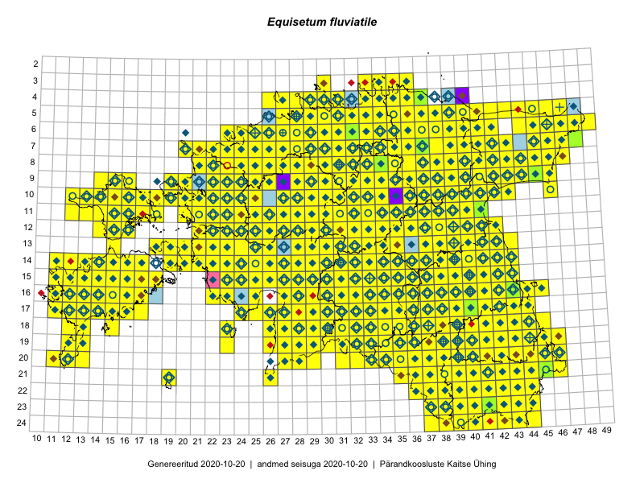

Equisetum fluviatile
Uuendatud: 2016-12-02
Kaardile koondatud taksonid: Equisetum fluviatile L.

Kaart põhineb 915 vaatlusel. Taksonit on leitud 452 ruudust.
Kuvatud viited 20 esimesele andmebaasikirjele, ülejäänud PlutoFis
- Malle Leht: 2015-05-16: : ala
- Tiit Hallikma, Toomas Kukk, Indrek Tammekänd: 2015-06-09: 12-28: ala
- Malle Leht: 2015-07-09: : ala
- Peedu Saar, Timo Luhamäe: 2015-05-10: 12-30: ala
- Peedu Saar, Timo Luhamäe: 2015-05-10: 12-32: ala
- Peedu Saar, Timo Luhamäe: 2015-05-13: 06-40: ala
- Peedu Saar: 2015-05-14: 09-43: ala
- Peedu Saar: 2015-05-14: 10-43: ala
- Peedu Saar, Liina Oja: 2015-05-22: 19-30: ala
- Peedu Saar, Liina Oja: 2015-05-22: 19-29: ala
- Thea Kull: 2015-07-07: 16-40: ala
- Malle Leht: 2015-08-02: : ala
- Peedu Saar, Liina Oja: 2015-05-21: 16-25: ala
- Peedu Saar, Liina Oja: 2015-05-20: 18-26: ala
- Peedu Saar, Toomas Kukk: 2015-05-28: 10-15: ala
- Peedu Saar, Toomas Kukk: 2015-05-27: 09-15: ala
- Toomas Kukk, Eerik Leibak: 2015-08-10: 09-14: ala
- Toomas Kukk, Peedu Saar: 2014-09-12: 07-42: ala
- Toomas Kukk, Peedu Saar: 2014-09-24: 06-40: ala
- Peedu Saar, Toomas Kukk: 2015-05-26: 10-16: ala